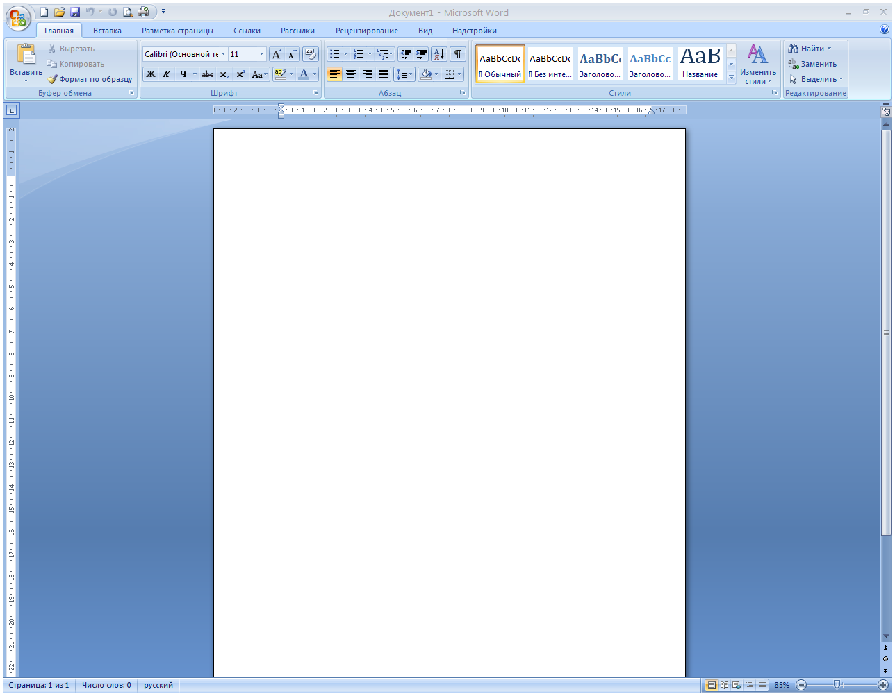
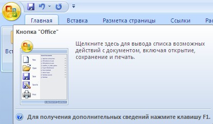
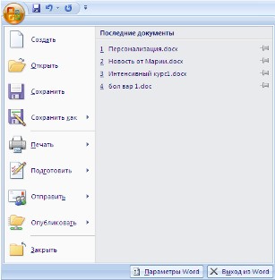
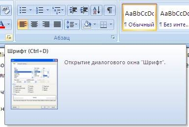
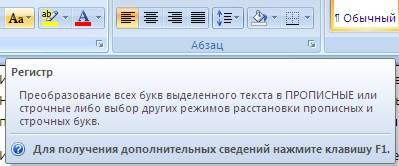
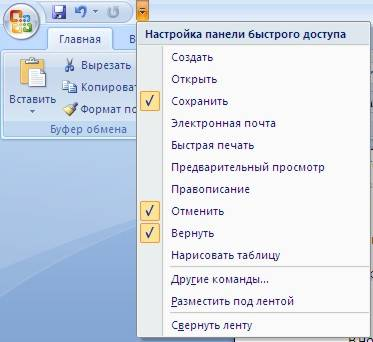
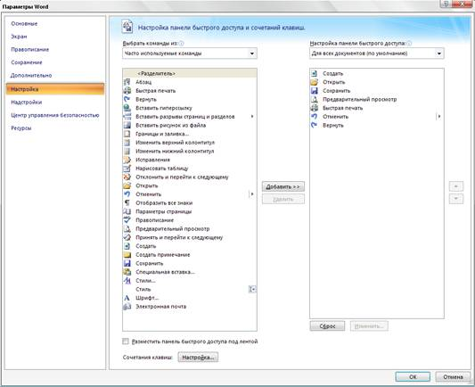
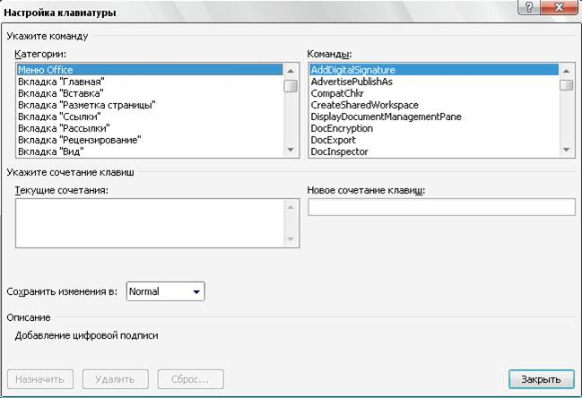
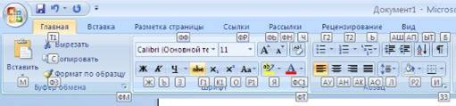
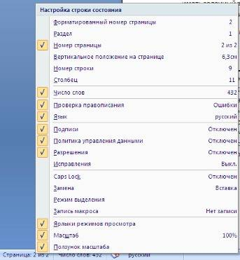

<< предыдущая
лекция
|
Лекция 2. Интерфейс Microsoft Office Word 2007 |
следующая
лекция >>
|
Интерфейс Microsoft Office Word 2007 кардинально отличается от предыдущих версий программы. Новым пользователям, пожалуй, будет даже проще его изучить, чем более опытным пользователям перестроиться. Но, это всего лишь дело времени.
Стартовое окно текстового редактора Word 2007 имеет следующий вид.

В новой версии отсутствуют привычные панели инструментов, которые можно было размещать в любом месте окна программы. Нет здесь и раскрывающихся меню, за исключением кнопки "Office", иконка которой расположена в левом верхнем углу окна.


Всю верхнюю часть окна занимает лента главного меню. Выбрав какой-либо его пункт, получаем в свое распоряжение необходимые инструменты, представленные в виде значков. Следует сказать, что добавить либо удалить значки на ленте главного меню не представляется возможным.
Кнопки меню сгруппированы по функциональным признакам. Например, Главное меню состоит из следующих групп: Буфер обмена, Шрифт, Абзац, Стили, Редактирование. На панель вынесены наиболее часто используемые кнопки. Если нужной кнопки не оказывается на панели, то ее можно найти, нажав на небольшую стрелочку в правом нижнем углу определенной группы. При этом изначально показывается всплывающая подсказка, которая информирует о предназначении инструментов.

Подобные всплывающие подсказки высвечиваются при наведении на любую кнопку меню, что значительно упрощает знакомство с меню.

Кроме ленты и вкладок главного меню, во всех приложениях МО2007 присутствует панель быстрого доступа. По умолчанию она расположена рядом с кнопкой "Office" выше ленты. На ней размещены кнопки часто выполнимых операций. По умолчанию это: Сохранить, Отменить ввод, Повторить ввод. Настроить данную панель можно, нажав на небольшую стрелочку, справа от панели.

Чтобы изменить состав панели быстрого доступа, выберите пункт меню "Другие команды..". Откроется окно настроек Word. Нужный раздел "Настройка" при этом будет выбран по умолчанию.

Для добавления нужной команды в панель быстрого доступа необходимо ее выделить в левой части списка и нажать кнопку "Добавить". Для удаления ненужной команды, ее надо выделить в правом списке и нажать кнопку "Удалить". Кроме того, здесь же можно указать, будет ли панель иметь заданный вид при открытии всех документов, выбрав из списка пункт "Для всех документов", или только для определенного документа.
Каждой команде можно назначить сочетание клавиш. Для этого необходимо нажать кнопку "Настройка".

В появившемся окне "Настройка клавиатуры" нужно выбрать требуемый пункт меню в списках "Категории" и "Команды". Если этой команде по умолчанию уже назначены сочетания клавши, то они отобразятся в поле "Текущие сочетания". Изменить их можно в строке "Новое сочетание клавиш". При этом можно сохранить изменения либо для всех документов (шаблон Normal.dot), либо только для открытого в данный момент в окне текстового редактора. В подавляющем большинстве случаев вполне достаточно выучить уже назначенные наиболее часто употребляемые сочетания "горячих" клавиш. Новичкам, которым поначалу трудно все запомнить, можно воспользоваться кнопкой Alt. Вот что получится, если нажать последовательно кнопки "Alt" "Я".

В нижней части окна программы находится строка состояния. По умолчанию в этой строке (в левой части) указываются количество страниц и номер текущей страницы, количество слов, язык ввода текста; (в правой части) - режим просмотра документа, масштаб. Чтобы изменить набор отображаемых элементов, необходимо щелкнуть правой кнопкой мышки на строке состояния. Снимая или устанавливая флажки соответствующих пунктов меню, можно настроить вид строки состояния по своему желанию.
